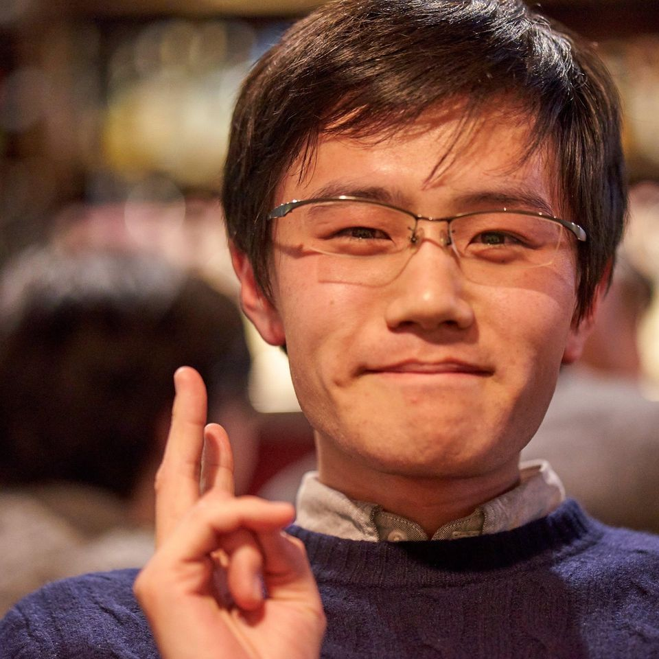

大友 和幸
- 基礎的な仮説検定や線形回帰などを中心に学習
- 公式HP 統計検定2級
- LSTMやTransformerなどの原理について学習
- PyTorchを使用してそれらを実装
- 公式HP NLPサマースクール
Python, PyTorch, R ## 学歴
安宅和人研究会(2018 - ) - 検索クエリデータの分析
上山信一研究会(2018 - 2019) - 経営戦略立案 マーケティング - 購買ログデータの分析
物理部
料理 - イタリアン、魚料理が中心
レコード収集 - ジャズ, クラシック
読書 - 村上春樹, カズオ・イシグロ, カート・ヴォネガット, 老子
カメラ